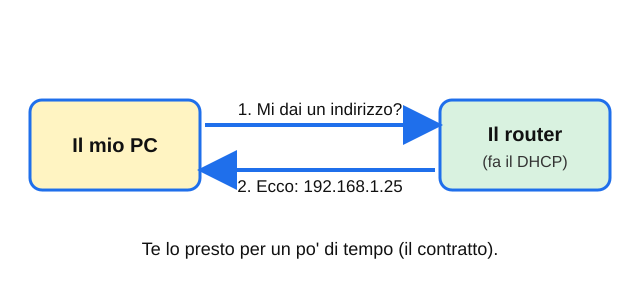
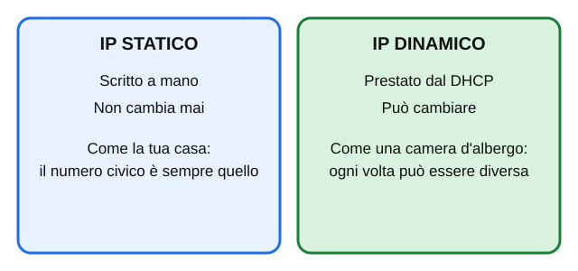
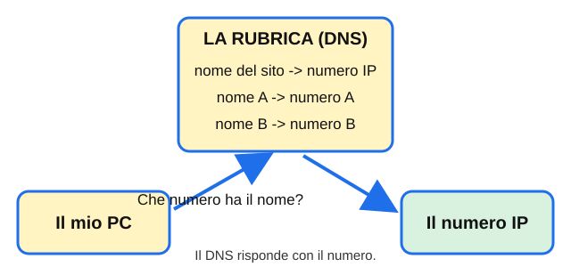
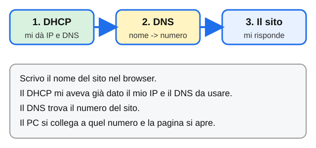

PASSO 1 · Le 4 schede: DHCP e DNS
Un'idea per scheda. Leggile in ordine. Le parole in neretto sono quelle da ricordare.
La pagina viene aggiornata spesso durante la lezione: premi F5 per vedere la versione nuova.
1Che cosa fa il DHCP

Quando accendi il PC non hai ancora un indirizzo IP. Il PC chiede: «Mi dai un indirizzo?». Il router risponde con un numero. Questo servizio si chiama DHCP. Il numero non è tuo per sempre: il router te lo presta per un po' di tempo. È come un contratto di affitto: quando scade, il PC lo rinnova o ne riceve un altro. Il DHCP ti dà anche il gateway e il DNS.
Pensaci: Chi ti dà l'indirizzo IP quando ti colleghi alla rete?
2IP statico e IP dinamico

L'IP dinamico è quello prestato dal DHCP: può cambiare. L'IP statico si scrive a mano e resta sempre lo stesso. A casa quasi tutti i PC usano l'IP dinamico: non devi fare niente. In una rete di classe alcuni PC hanno un IP statico: così quel PC ha sempre lo stesso indirizzo ed è facile da ritrovare. Per questo i PC della classe possono avere impostazioni diverse: guarderai il tuo.
Pensaci: Quale dei due cambia da solo?
3Che cosa fa il DNS

Per noi è facile ricordare un nome. Per la rete serve un numero IP. Il DNS è la rubrica: tu le dai il nome del sito e lei ti dà il numero. Se il DNS non funziona, la rete c'è ma i siti con il nome non si aprono. Il DNS preferito è il primo che il PC interroga; l'alternativo è la riserva, se il primo non risponde.
Pensaci: Che differenza c'è tra un nome di sito e un numero IP?
4Come lavorano insieme

Quando apri un sito succede tutto in fila. Prima di tutto, il DHCP ti ha già dato il tuo IP e ti ha detto quale DNS usare. Poi il DNS trasforma il nome del sito in un numero. Infine il tuo PC si collega a quel numero e la pagina si apre. Senza DHCP il PC non ha indirizzo. Senza DNS non trova i nomi.
Pensaci: Cosa succede se il DHCP funziona ma il DNS è rotto?
La pagina viene aggiornata spesso durante la lezione: premi F5 per vedere la versione nuova.